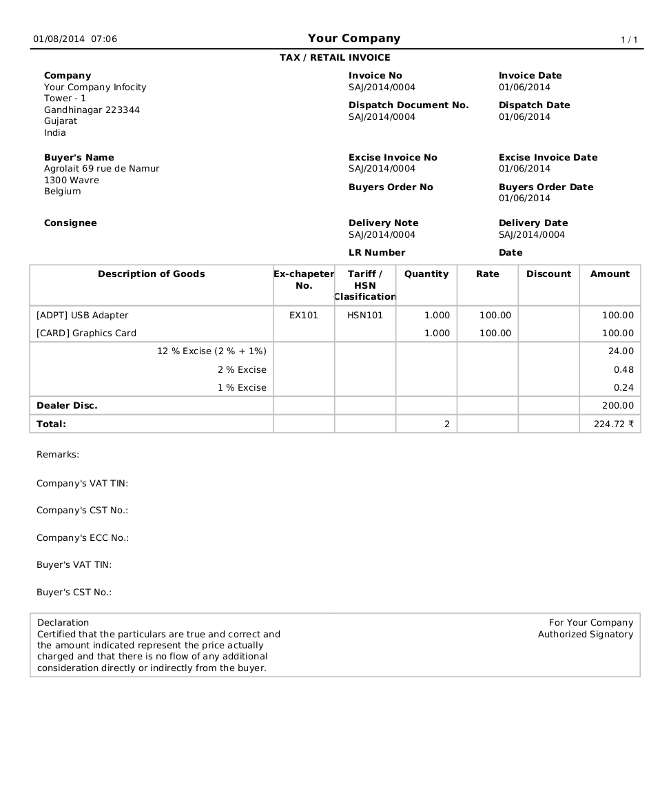

This module was developed by TinyERP Pvt Ltd (OpenERP India). Not covered under OpenERP / Odoo Maintenance Contract or Business Pack. Contact at india@openerp.com if you are looking for support or customization.
Tax / Retail Invoice
Print Tax / Retail Invoice in 4 copies

This module adds a new report on invoices for printing retail invoice which will contain more detailed information regarding excise, VAT, TIN etc. specifically used for Indian Localization.